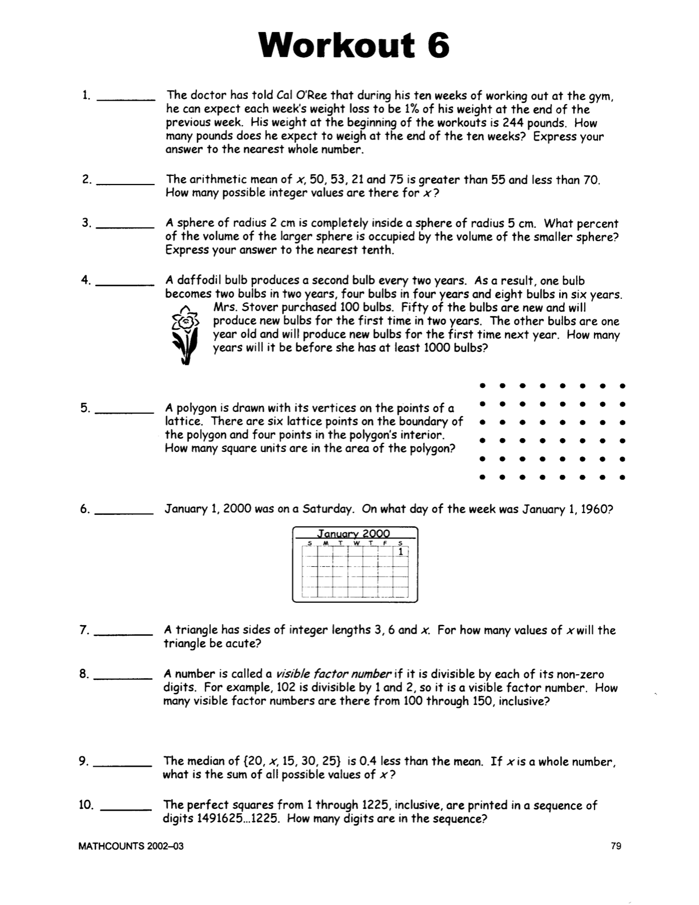

Answer Checker for POTW2
Developed in Gary's Software Development Class
Note: To discourge random guessing, there is a 10 second delay before checking a previous wrong answer.
Timer:
0
Score:
0
Your browser does not support the audio tag
Integer like 544
Integer like 45
Number to nearest 10th, like 3.5
Integer like 6
Integer like 12
Day of week, first letter in caps, like Monday.
Integer like 256
Integer like 22
Intger like 42
Integer like 22
